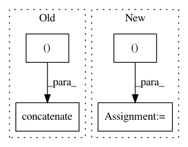

709de0106c5cb631d382523bbe51667cb80522cb,catalyst/contrib/scheduler/onecycle.py,OneCycleLR,__init__,#OneCycleLR#Any#Any#Any#Any#Any#Any#Any#Any#Any#Any#,22
Before Change
lr_annealing = np.linspace(max_lr, min_lr, lr_annealing_steps)
lr_decay = np.linspace(min_lr, final_lr, decay_steps)
self.final_lr = final_lr
self.learning_rates = np.concatenate(
(lr_warmup, lr_annealing, lr_decay)
)
momentum_decay = np.linspace(
init_momentum, min_momentum, warmup_steps)
momentum_annealing = np.linspace(
After Change
self.num_steps = warmup_steps + lr_annealing_steps + decay_steps
self.lr_range = init_lr, max_lr, min_lr, final_lr
self.momentum_range = \
init_momentum, min_momentum, max_momentum, final_momentum
self._calculate_lr_momentum(
warmup_steps,
lr_annealing_steps,
In pattern: SUPERPATTERN
Frequency: 3
Non-data size: 4
Instances
Project Name: catalyst-team/catalyst
Commit Name: 709de0106c5cb631d382523bbe51667cb80522cb
Time: 2019-05-07
Author: tez.romach@gmail.com
File Name: catalyst/contrib/scheduler/onecycle.py
Class Name: OneCycleLR
Method Name: __init__
Project Name: NifTK/NiftyNet
Commit Name: ddfa2edb2ca1fd28d23bee609565353d543ec722
Time: 2019-06-04
Author: carole.sudre@kcl.ac.uk
File Name: niftynet/engine/windows_aggregator_resize.py
Class Name: ResizeSamplesAggregator
Method Name: decode_batch
Project Name: NifTK/NiftyNet
Commit Name: 5af1994def9a52fe1ffd2847b2519f1e27cfbc64
Time: 2017-08-12
Author: wenqi.li@ucl.ac.uk
File Name: niftynet/io/misc_io.py
Class Name:
Method Name: do_resampling